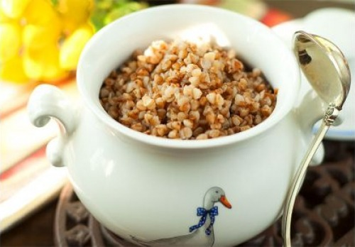

Оbviously, the best of porridges.
Really sorry for those who didn't try it.
Ingridients
- 200 g of buckwheat
- 400 ml of water
- salt to taste
Steps
- Sort out and wash buckwheat groats.
- Pour into a pan and fill with water.
- Let it boil under the lid, add salt.
- Remove the lid and cook until the liquid wastes (some water should remain on the bottom).
- Remove from heat and let stand covered for 10 minutes.The royal meal is ready!
Return to top
Return to start page